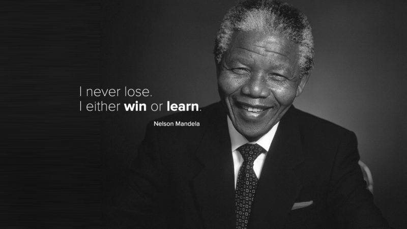

Side Hustle Internship 3.0 || Intern Id: SH-IT-03005
Adizue Peace
“ You only live once, but if you do it right, once is enough.” — Mae West
Tribute to Mandela
Nelson Rolihlahla Mandela (18 th July 1918 – 5 th December 2013) was a South African anti-apartheid revolutionary, politician, and philanthropist, who served as President of South Africa from 1994 to 1999. He was the country 's first black head of state and the first elected in a fully representative democratic election. His government focused on dismantling the legacy of apartheid by tackling institutionalised racism and fostering racial reconciliation. Ideologically an African nationalist and socialist, he served as President of the African National Congress (ANC) party from 1991 to 1997.
Mandela served 27 years in prison, initially on Robben Island, and later in Pollsmoor Prison and Victor Verster Prison. Amid growing domestic and international pressure, and with fears of a racial civil war, President F. W. de Klerk released him in 1990. Mandela and de Klerk negotiated an end to apartheid and organised the 1994 multiracial general election in which Mandela led the ANC to victory and became President. Leading a broad coalition government which promulgated a new constitution, Mandela emphasised reconciliation between the country's racial groups and created the Truth and Reconciliation Commission to investigate past human rights abuses. Economically, Mandela 's administration retained its predecessor's liberal framework despite his own socialist beliefs, also introducing measures to encourage land reform, combat poverty, and expand healthcare services. Internationally, he acted as mediator in the Pan Am Flight 103 bombing trial and served as Secretary-General of the Non-Aligned Movement from 1998 to 1999. He declined a second presidential term and in 1999 was succeeded by his deputy, Thabo Mbeki. Mandela became an elder statesman and focused on combating poverty and HIV/AIDS through the charitable Nelson Mandela Foundation.
If you want to know more about Nelson Mandela click here